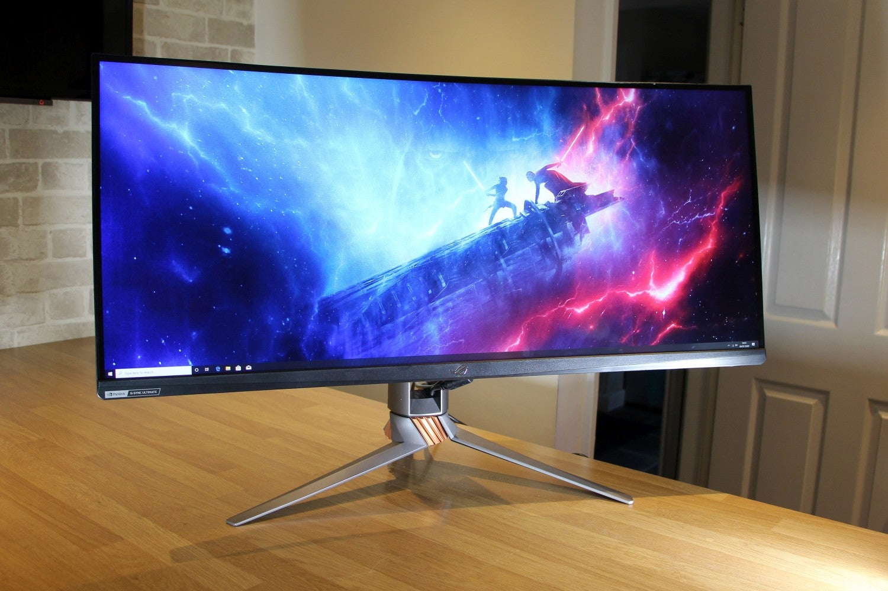
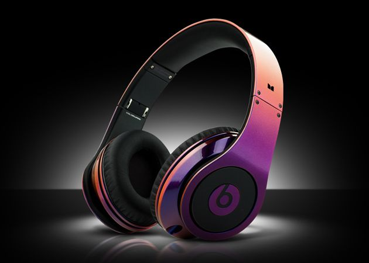
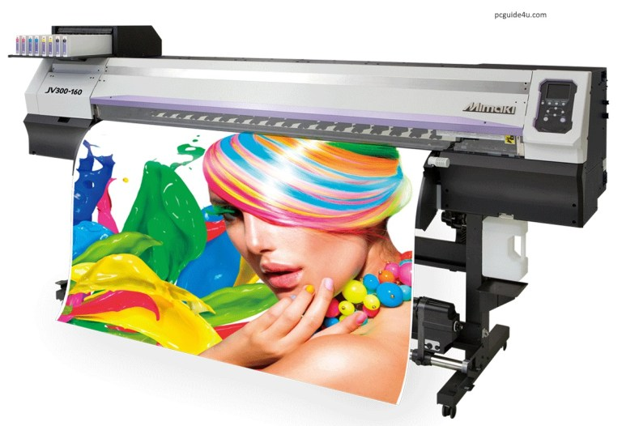
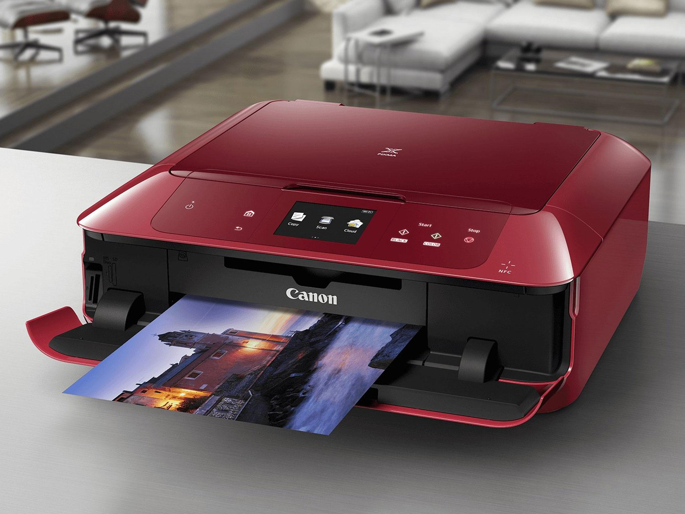
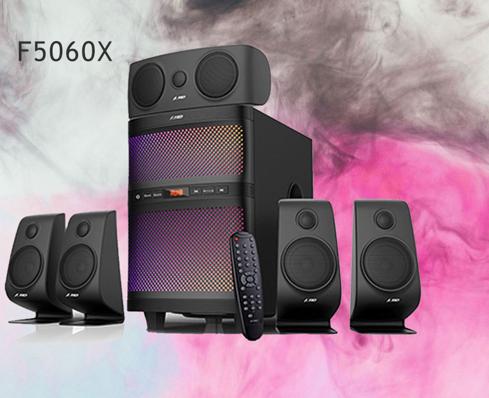
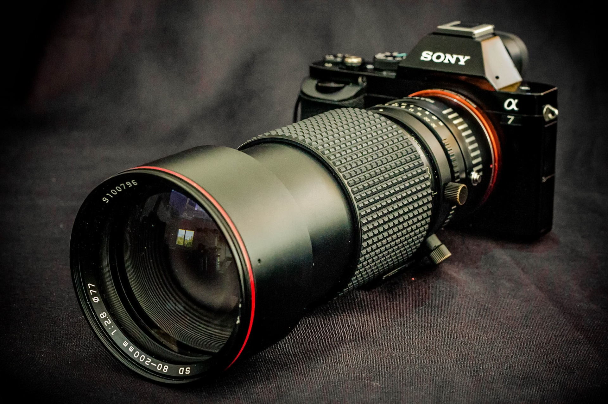

I/O DEVICES OF COMPUTER
INPUT/OUTPUT DEVICES
An input is data that a computer receives. An output is data that a computer sends.An input device sends information to a computer system for processing, and an output device reproduces or displays the results of that processing. Input devices only allow for input of data to a computer and output devices only receive the output of data from another device. Most devices are only input devices or output devices, as they can only accept data input from a user or output data generated by a computer. However, some devices can accept input and display output, and they are referred to as I/O devices (input/output devices). For example, a keyboard sends electrical signals, which are received as input. Those signals are then interpreted by the computer and displayed, or output, on the monitor as text or images. The computer sends, or outputs, data to a printer. Then, that data is printed onto a piece of paper, which is also considered output.

MONITOR
In computing, a monitor screen is a computer display. A monitor could be a CRT, LED or LCD. Whatever you do in your computer, monitor is the hardware device that shows you the output. So, without monitor you can’t work in your computer
KEYBOARD
A computer or laptop keyboard is kind of hardware device that you can use to type data in a computer system. It usually plugs and play device. A computer keyboard includes a set of alphabets (A-Z), numbers (0-9), symbols and function keys. A computer keyboard type should be PS/2 (5-Pin DIN or 6-Pin DIN), USB (Universal Serial Bus), Wireless. Now days USB and Wireless keyboard are common in use. Earlier, PS/2 was the most used keyboard.

HEADPHONES
A head phone is an output device that also generate sound. Headphones are a pair of small loudspeakers. Headphones can be placed inside or outer part of your ears to listen anything and won’t disturb anyone else while playing anything. Can be used on computers or smartphones.
MOUSE
A computer mouse is an input and a hardware, pointing device that you can connect to your computer system. You can move cursor on your screen. It’s a hand held device that you can move with your hand and do clicks (right or left) on your screen to send commands to your computer screen area. Earlier PS/2 mouse was in existence but now a days USB and Wireless Mouse have taken place.

PLOTTER
A Plotter is a big size printer that allow users to get big size print that cannot be done by basic printers. Most of the plotter has the feature of LTP, LAN and USB printing ports that connectivity to your computer. Generally, plotters are used to take prints of line-art application, big maps, architecture designs, drawings, etc.
TOUCHPAD
A touchpad or trackpad is a kind of input device that has a limited area wherein you can Point, scroll, click and swipe. A Touchpad most commonly found on computer laptops (computer brand doesn’t matter). Touchpad allows to use all the features as you do with a computer mouse.

PRINTER
A printer is an output device that can print any document, web page, photographs, etc by command send by your computer desktop or laptop. There are several brands and type of printers available for an example: Laser-jet, Office jet, Ink jet, Line printers. Now days most of the printers includes the feature of scanner and copier.
SCANNER
A scanner is an electronic and input device that allows user to scan any of document, images, etc. and convert them to digital formats that you can see on your computer screen. It’s a kind of hardware device that you can connect to your desktop computer/laptop by using USB connection. Most uses in offices to create an image files of physical documents.

SPEAKER
Computer speaker is an output device because you are getting sound from it whenever you play any online or offline music, video or anything that has sound in it. Basically, speaker is a hardware device that you can connect to your computer to generate sound.
MICROPHONE
Also knows as its common name “Mic”. Basically Microphone converts your voice/sound into electrical signals and you will get an output on connected speakers. Can be used to record voice.
PROJECTOR
A projector is a hardware device that you can connected to computer desktop/laptop by using HDMI or VGA cable (depends compatibility) to project your computer display in a large screen. If you are using a projector, you also required a projection screen where you can project the computer display.
BARCODE READER
A Barcode Reader is an input device and also known as Barcode Scanner is a hand held device. It is an electronic device that can read barcodes those has printed on any product, etc. It is generally used to track products and prices in a computer software system.

CAMERA
A Digital Camera allow user to take pictures by using digital technology in cameras. You can click and take photographs/pictures of anything that you have focused. You can control it by its certain features.
JOYSTICK
Joystick is a kind of control stick that most used for computer gaming’s that allows users to control characters or machine.